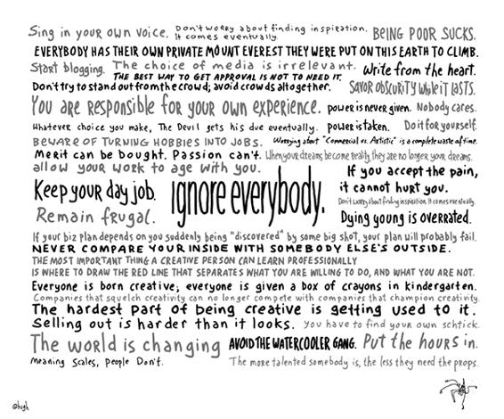

Tôi không có ý định khiến bạn từ bỏ công việc của mình, thuyết phục bạn trở thành nhà khởi nghiệp hay đơn giản là thay đổi toàn bộ thế giới.
Tất cả những gì tôi muốn trong cuốn sách này là thuyết phục bạn trở thành người nghệ sĩ mà bạn vốn dĩ đã trở thành. Để đứng lên vì điều gì đó. Để có được sự tôn trọng và an tâm mà bạn xứng đáng.
Nếu tôi thành công, thì giờ bạn đã biết mình có một món quà để trao tặng, một điều gì đó bạn có thể làm để thay đổi thế giới (hoặc phần của bạn trong thế giới đó) tốt hơn. Tôi hy vọng bạn sẽ làm thế, vì chúng tôi cần bạn.

---❊ ❖ ❊---
Hãy hát bằng giọng của mình.
Đừng lo lắng tìm kiếm niềm cảm hứng, rồi nó cũng sẽ đến thôi.
Nghèo khổ là cái tội.
Mỗi người đều có đỉnh Everest của riêng họ để chinh phục trên Trái Đất này.
Hãy bắt đầu viết blog.
Lựa chọn của truyền thông không liên quan đến bạn.
Hãy viết bằng cả trái tim.
Cách tốt nhất để được thừa nhận là không cần đến điều đó.
Hãy nếm trải sự tăm tối đến khi nó kết thúc.
Đừng cố gắng nổi bật từ đám đông, hãy tránh xa đám đông hoàn toàn.
Bạn chịu trách nhiệm về kinh nghiệm của chính mình.
Quyền lực không được ban cho, mà phải tự giành lấy.
Chẳng ai quan tâm đâu.
Hãy làm vì bản thân bạn.
Bất kể bạn đưa ra lựa chọn nào, Ác Quỷ cũng có được thứ nó muốn.
Hãy cảnh giác khi biến sở thích thành công việc.
Lo lắng về “thương mại hay chất nghệ thuật” là điều hoàn toàn phí thời gian.
Phẩm chất có thể mua được, nhưng đam mê thì không.
Khi ước mơ của bạn trở thành sự thật, nó sẽ không còn là ước mơ nữa.
Hãy cho phép công việc già đi cùng với bạn.
Nếu bạn chấp nhận nỗi đau, nó sẽ không thể làm tổn thương bạn.
Hãy duy trì công việc thường ngày.
Hãy sống thanh đạm.
Hãy phớt lờ tất cả mọi người.
Đừng cố tìm kiếm niềm cảm hứng, rồi nó cũng sẽ đến thôi.
“Chết trẻ” được đánh giá quá cao.
Nếu kế hoạch kinh doanh của bạn phụ thuộc vào việc bạn được một nhân vật quan trọng tình cờ “phát hiện”, thì kế hoạch đó có thể sẽ thất bại.
Đừng bao giờ so sánh mặt trong của bạn với mặt ngoài của kẻ khác.
Điều quan trọng nhất mà một người sáng tạo có thể học về nghề nghiệp là biết đâu là nơi nên vạch ra ranh giới giữa điều bạn muốn làm với điều bạn không muốn làm.
Ai sinh ra cũng đều sáng tạo, ai cũng được tặng một hộp sáp màu ở vườn trẻ.
Những công ty giẫm đạp lên trí sáng tạo sẽ không còn cạnh tranh nổi với những công ty đấu tranh cho trí sáng tạo.
Điều khó khăn nhất để trở nên sáng tạo là tập quen với nó.
Thuyết phục khó hơn nhiều so với bề ngoài.
Bạn phải tìm ra mánh quảng cáo của riêng mình.
Thế giới đang thay đổi.
Hãy tránh xa nhóm người chuyên trốn việc để giải khuây.
Hãy nỗ lực để xứng đáng từng giờ.
Ý nghĩa có thể nhân rộng, nhưng con người thì không.
Một người càng có tài, người ấy càng ít cần đến kẻ khác chống đỡ.
---❊ ❖ ❊---
Bạn sẽ lựa chọn chứ?
Tất nhiên, đây là phần đáng sợ. Lời thách thức đã được đưa ra. Rào cản đến thành công không phải là bạn là ai, bố mẹ bạn là ai hay bạn sống tại đâu.
Chẳng có dấu hiệu nào cho thấy bạn cần phải được sinh ra với một tập hợp các biệt tài hay tài năng đẳng cấp thế giới.
Rất dễ để bạn cố gắng thỏa hiệp và lựa chọn cả hai, vừa hòa nhập, vừa nổi bật. “Cứ làm cả hai thôi”, bạn có thể nói thế. Nhưng đằng sau đó là thất bại. Không có chỗ cho sự thỏa hiệp, vì những kẻ cạnh tranh với bạn đều chuyên biệt. Họ sẽ ám ảnh với việc hoặc hòa nhập, hoặc nổi bật. Hành vi quyết định chính là hành vi thành công.
Rào cản đến thành công chỉ là một lựa chọn. Và nó tùy thuộc ở bạn.
Không hối tiếc
Có một thương hiệu quần áo nổi tiếng với một khẩu hiệu lớn được in trên đó: KHÔNG SỢ HÃI.
Tôi nghĩ phương châm này vừa xảo trá, vừa ngu ngốc. Lẽ tất nhiên, bạn sẽ sợ hãi. Lái xe đạp mà không có mũ bảo hiểm có thể là can đảm, nhưng không hề khôn ngoan. Lướt dung nham có thể là can đảm, nhưng cũng không khôn ngoan. Nuốt lửa không qua luyện tập cũng có thể là can đảm, nhưng chúng ta đều đồng tình rằng việc đó không khôn ngoan tí nào.
Vậy không ngoan là gì? Là sống mà không hối tiếc.
Giờ bạn đã biết rõ cái gọi là nỗi sợ vẫn níu chân bạn suốt bao năm qua, bạn sẽ lựa chọn làm gì trước sự phản kháng? Giờ bạn hiểu rằng xã hội sẽ thưởng cho bạn vì bạn nổi bật, vì bạn trao tặng, vì bạn tạo ra kết nối và gây ấn tượng, bạn định sẽ lựa chọn làm gì với thông tin đó?
Bạn có một thiên tài trong mình, một thứ thần lực sẵn sàng chia sẻ điều gì đó với thế giới. Ai cũng như thế. Bạn định sẽ tiếp tục che giấu nó, kìm nén nó và thỏa mãn với những điều không xứng đáng với mình chỉ vì não bò sát của bạn e sợ hay sao?
Nếu làm thế, bạn sẽ hối tiếc.
Bạn có thể thay đổi tất cả không?
Bạn có thể sẽ không vĩnh viễn mắc kẹt trên con đường mòn như bạn nghĩ. Con đường mà bạn đi trên không tồn tại vĩnh viễn, cũng không hoàn hảo. Chắc chắn sẽ có những đường mòn không hoàn hảo bằng, và những con đường tốt hơn nó. Nhưng điều chắc chắn là bạn có thể thay đổi tất cả, nếu bạn chọn làm thế.
Mọi người đã tẩy não bạn để bạn cứ bình chân như vại suốt bấy lâu. Bạn sẽ dễ hình dung hoàn cảnh hiện tại của mình như một chiếc hộp, với một loạt vách ngăn mà không có lối thoát. Tất nhiên, bạn cần kiếm sống để duy trì lối sống như hiện tại, vì làm bất cứ điều gì ngoài lối sống đó đều quá đáng sợ, quá rủi ro và quá liều lĩnh. Đặc biệt nếu tính đến sức khỏe, gia đình, nền kinh tế, tuổi tác, khu dân cư, tổ chức, học vấn và những mơ ước của bạn. Ai cũng sẽ cảm thấy như thế.
Ấy thế mà…
Ấy thế mà hằng ngày vẫn có một số ít người (nhiều hơn để gọi là ít) thay đổi tất cả. Bạn cũng có thể làm thế. Bạn có thể đón nhận một con đường mới và bước trên nó. Đừng đứng yên một chỗ. Bạn là thiên tài và chúng tôi cần sự đóng góp của bạn.
Hãy hành động. Làm ơn!
Chúng ta không thể tầm thường hơn thế này mà vẫn có lợi.
Chúng ta không thể để bị đồng hóa, ngoan ngoãn và rẻ mạt hơn nữa. Chúng ta cũng không thể làm mọi thứ nhanh hơn.
Chúng ta đã phản lại bản chất thực sự của mình và để bị tập thể hóa, ẩn danh hóa và phi nhân tính hóa nhiều nhất có thể, giống như nhiều người khác trong hệ thống của chúng ta. Ngay đến chăm sóc sức khỏe giờ cũng thành hệ thống, chứ không phải tương tác giữa người và người. Thực ra, chúng ta còn có thể đi xa hơn thế, nhưng tôi cược rằng đó sẽ không phải là một hành trình có lợi hay vui vẻ gì.
Nếu mọi tài sản thế chấp đều giống nhau, thì tất nhiên, chúng có thể bị cắt gọt, trộn lẫn và bán lại. Nhưng điều đó cũng đồng nghĩa mọi chủ ngân hàng và hộ gia đình đều giống nhau, và do đó tất cả đều là chủ nhà – đồng nghĩa chỉ những tài sản rẻ tiền và sinh lợi mới có ý nghĩa.
Nếu mọi sản phẩm và cửa hàng trực tuyến đều giống nhau, thì tất nhiên, tôi sẽ sử dụng một trang web so sánh giá để tìm ra sản phẩm rẻ nhất.
Nếu mọi nhân viên không khác gì bản hồ sơ lý lịch, và mọi hồ sơ đều có thể rà soát, thì sao chúng ta phải ngạc nhiên khi máy tính của mình tìm thấy những kẻ trung bình vô danh để lấp đầy các công việc trung bình vô danh của chúng ta?
Nếu mọi nhà hàng trên xa lộ đều gửi đến tôi một màn phục vụ hoan hỉ từ các nhân viên có bộ dạng robot giống nhau, với cùng giá bán, thì việc tôi dừng ở đâu liệu có quan trọng?
Chúng ta có cần phẳng và nhỏ bé hơn nữa không?
Khao khát của chúng ta là được đối xử như những cá nhân sẽ chấm dứt vòng luân hồi này. Đam mê cống hiến và triển vọng của chúng ta, thứ đam mê từng bị nhấn chìm trong trường học và thế giới doanh nghiệp – chính là lối ra duy nhất.
Mọi tổ chức thành công đều được xây dựng xung quanh con người. Những con người làm nghệ thuật. Những người tương tác với người khác. Những người đàn ông và phụ nữ không chỉ lo xếp tiền, mà chịu tiếp xúc, trao tặng và kết nối.
Tất cả những tương tác trên đều là nghệ thuật. Nghệ thuật không chỉ là những bức tranh; mà còn là bất cứ bất cứ điều gì thay đổi một người trở nên tốt hơn, là bất kỳ sự tiếp xúc vô danh nào mang lại một cái kết đậm tình người (chứ không chỉ vì thương mại).
Nghệ thuật không dùng để mua bán. Nó phải bao hàm một yếu tố là món quà, một điều gì đó đưa người nghệ sĩ đến gần hơn với người xem, chứ không phải chia cách họ với nhau. Vì thế, chúng ta cần phải ghi nhớ cách trở thành nghệ sĩ.
Những nghệ sĩ, chí ít là các nhân vật vĩ đại, nhìn rõ thế giới hơn phần còn lại trong chúng ta. Họ có prajna – cảm nhận về bản chất thực sự – chứ không đơn thuần là những gì người nghệ sĩ đúc kết được. Cái nhìn chân thực đó cho phép họ thấy rõ tương lai phía sau đường chân trời ngập trong mây phủ. Khi thế giới của chúng ta thay đổi ngày càng nhanh hơn, chính những nghệ sĩ đích thực này sẽ diễn tả tương lai của chúng ta và dẫn ta đến đó.
Điều duy nhất ngăn bạn trở thành một trong những nghệ sĩ này chính là sự phản kháng. Giọng nói chát chúa của não bò sát cứ nói rằng có lẽ bạn sẽ không làm được, rằng bạn không xứng đáng và mọi người sẽ cười nhạo bạn. Chúng ta không thiếu tài năng, chỉ thiếu hành động cho ra thành quả. Bất kỳ ai lựa chọn đánh bại sự phản kháng, và có vốn hiểu biết để vẽ nên tấm bản đồ đúng đều có thể trở thành một nòng cốt thành công.
Song, bạn không thể giả vờ, vì con người rất giỏi nhận ra khi nào một món quà không phải là quà, khi nào chúng ta bị đùa cợt và thao túng. Và đôi lúc, chỉ nghệ thuật của bạn là không đủ. Nó sẽ không đủ giúp chúng ta bán được hàng hay thậm chí kiếm sống. Nhưng chúng ta phải kiên trì, vì việc của chúng ta là làm nghệ thuật.
Thành quả của tất cả những nghệ thuật, rủi ro, quà tặng và tính nhân văn này – khi kết hợp chúng với nhau – vừa tuyệt vời, vừa đầy nghịch lý. Thành quả của việc trở lại với con người tiền-thương-mại của chúng ta trước kia thực ra sẽ tạo nên thế giới hậu-thương-mại giúp nuôi sống và làm giàu cho chúng ta, đồng thời mang đến sự ổn định mà chúng ta hằng tìm kiếm suốt bấy lâu.